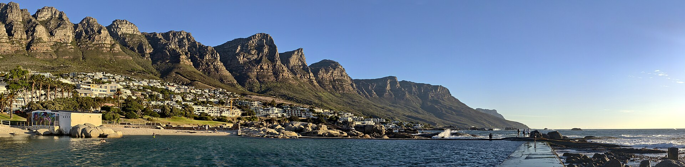

Stop 01Atlantic Seaboard, Clifton & Camps Bay
After collecting you directly from your Cape Town accommodation, we cruise along the glamorous Atlantic Seaboard through Sea Point and Bantry Bay. We pause at Maiden’s Cove, an elevated granite viewpoint wedged between the four white-sand coves of Clifton and palm-lined Camps Bay Beach, with the towering Twelve Apostles mountain range rising straight above the turquoise Atlantic swells.
Louis’s Insider Note: Morning light along the Twelve Apostles is crystal-clear for photography before the afternoon sea breeze picks up.